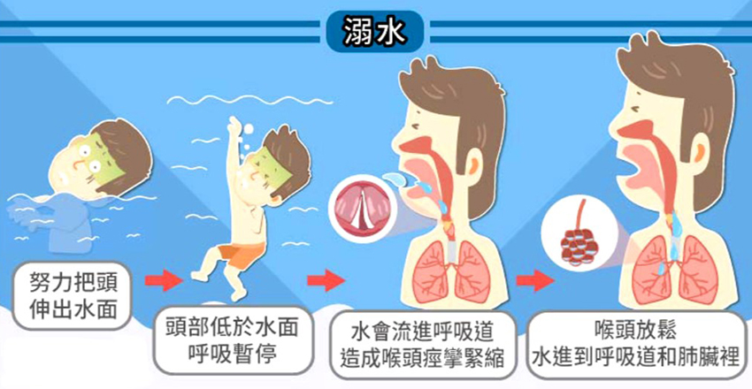

每月快訊
月號－哺乳育嬰站
有「水」的地方，就有可能溺水！ 這3種溺水型態，爸媽了解多少？
一般人的觀念裡，溺水只會在海邊、游泳池、水樂園才會發生，殊不知對孩子來說，只要有水的地方就是溺水的危險處。溺水不一定要完全沉入水中（濕性溺水），有時僅是嗆水也能造成溺水（乾性溺水和二次溺水），通常多發生在父母不留意的時候，但只要加以注意，就能避免憾事發生。 |
||||||||
| 溺水通常沒有聲音、不會呼救 | ||||||||
有別於電視劇所呈現，溺水不會有大叫救命、大力拍水的情況。這是由於溺水過程中，孩子會因急著把頭伸出水面而無法呼吸，聲帶與上呼吸道會變得緊繃、無法發出聲音。因此即使溺水已發生，旁人也很少會注意到，通常是無意識飄流、載浮載沉時才會讓人發現。 |
||||||||
| 只有「水」的地方，就有可能溺水 | ||||||||
| 有水的地方，不僅是海水、泳池、水樂園，還有馬桶、浴缸、池塘、蓄水池以及任何能積水之地。以學齡前的孩子來說，水像是有獨特吸引力一樣，讓孩子特別愛玩水，尤其家中若有未滿一歲的嬰幼兒，盡量不要在浴室中儲水（臉盆、水桶或浴缸），最好平時浴室都關上門，避免孩子進入浴室而大人渾然不知。 | ||||||||
| 溺水分成這3種形態 | ||||||||
| 溺水分成濕性溺水、乾性溺水、二次溺水： | ||||||||

|
||||||||
| 充氣游泳圈、手臂圈都不是100%安全 | ||||||||
| 許多家長以為孩子套了泳圈、或者游泳手臂圈就很安全，但其實不然。曾發生孩子帶著泳圈游泳，沒想到泳圈側翻、孩子臉栽進水裡，雙腳卻卡在游圈中無法脫身，幸好及時被發現才未發生憾事。孩子游泳時，建議還是穿上合身且正規的漂浮裝置，如兒童專用救生衣、專用游泳圈等。 | ||||||||
| 乾性溺水、二次溺水會有明顯徵兆 | ||||||||
| 乾性溺水和二次溺水都是比較少見的情況，但仍有可能會發生，因此若孩子在水域、游泳池、海邊有發生嗆水或差點溺水的情況，都要提高警覺，是否出現以下徵兆：
1.持續且劇烈的咳嗽 2.胸口疼痛 3.呼吸困難或換氣過度 4.嘴唇發紫 5.嘔吐肚子痛 6.昏睡 7.明顯的疲勞 |
||||||||
| 眼睛不離孩子，才能避免溺水 | ||||||||
| 孩子玩水游泳時，家長一定要在旁看顧且眼睛不離孩子，因為溺水不分深淺，哪怕只是一個水坑都有可能引發嗆水發炎。只要視線聚焦在孩子身上，一發生危險時才能立刻給予援助。 | ||||||||
| 帶孩子玩水時須留意這5點： | ||||||||
1.孩子玩水一定要有父母或成人陪同，務必要有人在旁監看。 |
||||||||
| 資料來源 有「水」的地方，就有可能溺水！這3種溺水型態，爸媽了解多少？ - 媽咪拜 |